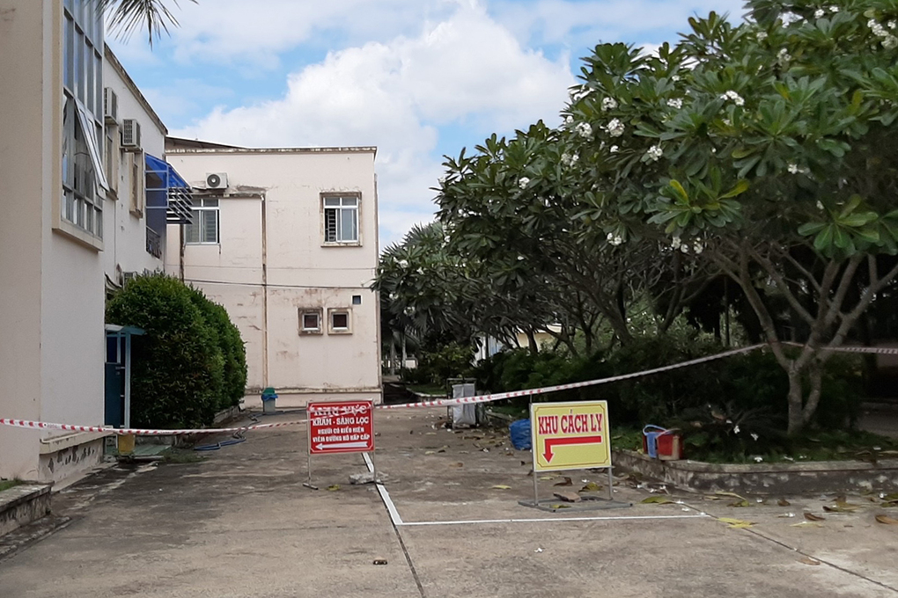

TIN TỨC / Đóng cửa quán cơm 'bệnh nhân 1440' từng ghé
Đóng cửa quán cơm 'bệnh nhân 1440' từng ghé
Quán cơm ở huyện Cái Bè bị phong tỏa, 13 nhân viên được cách ly sau khi "bệnh nhân 1440" khai đã ghé qua ba hôm trước.
Ngày 27/12, ông Nguyễn Quốc Thanh, Phó bí thư huyện Cái Bè (Tiền Giang) cho biết, đơn vị chức năng đã tiến hành phun tiêu độc, khử trùng quán cơm Minh Phát 2 (Mỹ Đức Đông, Cái Bè) sau khi nhận thông tin "bệnh nhân 1440" từng ghé quán này.
"Một nhân viên quán tiếp xúc gần với ca bệnh đang cách ly tại trung tâm y tế huyện, 12 nhân viên khác được cách ly tại nhà, quán cơm đã tạm dừng hoạt động", ông Thanh nói.
Trong khi đó, ông Văn Công Minh, Giám đốc Sở Y tế tỉnh Vĩnh Long cho biết, "bệnh nhân 1440" đang được cách ly điều trị tại Bệnh viện Lao và bệnh Phổi tỉnh Vĩnh Long, sức khỏe của ổn định, không có biểu hiện ho sốt.
Mẫu bệnh phẩm của 13 trường hợp tiếp xúc gần (F1) ca bệnh gửi xét nghiệm tại Viện Pasteur TP HCM cho kết quả âm tính lần một. Những người này gồm cha, mẹ bệnh nhân, cán bộ công an, nhân viên y tế, người chạy xe ôm, chủ tiệm tạp hóa ở huyện Mang Thít, tiếp tục cách ly tại trung tâm y tế. Ngoài ra, hơn 120 trường hợp F2 đang được theo dõi, cách ly tại nhà.
Sở Y tế đã tiến hành tiêu độc, khử trùng các địa điểm mà bệnh nhân đã đến. Ngoài ra đơn vị đang tiếp tục rà soát để truy tìm các trường hợp F1 khác trong và ngoài tỉnh đã tiếp xúc gần với bệnh nhân.
Về việc "bệnh nhân 1440" thay đổi lời khai quá trình di chuyển, từ biên giới An Giang về Vĩnh Long chứ không phải Tây Ninh, Giám đốc Sở Y tế tỉnh Vĩnh Long cho biết, "những ngày qua, người này khai khá lung tung, qua nhiều địa phương nhưng chưa rõ ràng". UBND tỉnh đã chỉ đạo ngành công an tiếp tục xác minh.
Hoàng Nam - Cửu Long